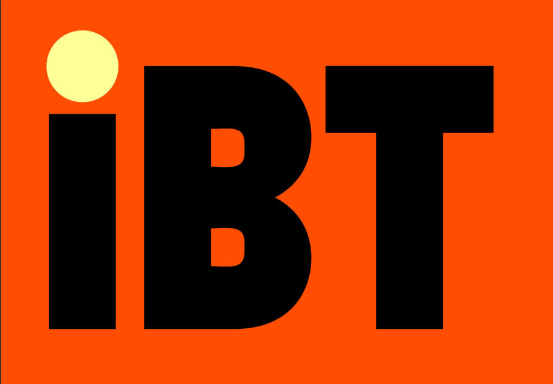
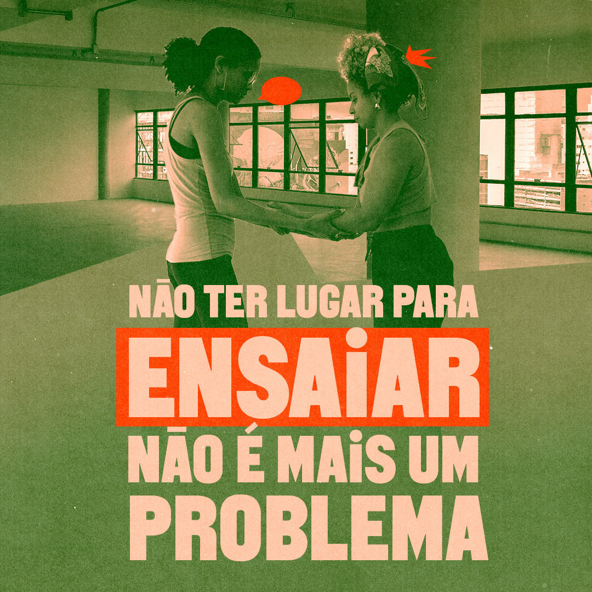

Instituto Brasileiro de Teatro (iBT) abre inscrições para o segundo edital de ocupação de salas de ensaio em São Paulo

Uma oportunidade imperdível para grupos e artistas independentes das artes cênicas.

O Instituto Brasileiro de Teatro (iBT) anunciou a abertura do segundo Edital de Ocupação de Salas de Ensaio no Centro Cultural de Artes Cênicas em São Paulo. O edital oferece quatro salas de ensaio, sendo duas com 164 m² e duas com 83 m², disponíveis em dois períodos: das 10h às 15h ou das 16h às 21h.
O processo de seleção está aberto a grupos, companhias e artistas independentes atuantes nas artes cênicas, exclusivamente para ensaios artísticos. Para participar, é necessário preencher o formulário de inscrição disponível no site do iBT e enviar o material solicitado. As inscrições iniciam na quarta-feira, dia 12 de junho, e vão até 7 de julho.
O Instituto Brasileiro de Teatro (iBT), fundado em 2022, tem como missão democratizar as artes cênicas, promovendo eventos diversos e formando novas plateias por meio de espetáculos gratuitos ou a preços populares. A organização sem fins lucrativos busca acelerar a profissionalização de grupos e artistas, oferecendo capacitação e auxiliando na realização de espetáculos, incluindo a captação de investimentos do setor privado. Além disso, o iBT também realiza grandes espetáculos, garantindo acesso universal através de ingressos gratuitos ou acessíveis.
As salas de ensaio estarão localizadas na sede administrativa do iBT, na Avenida Brigadeiro Luís Antônio, em São Paulo. O edifício, atualmente em reformas, está sendo transformado em um centro cultural e hub das artes cênicas. Com 13 andares, o espaço contará com salas para aulas, exposições, além de um bar no rooftop e um restaurante, prometendo ser um ponto de referência para a cultura na cidade.
A seleção dos projetos será realizada por uma comissão do próprio corpo diretivo do iBT, que avaliará as propostas de acordo com a disponibilidade de cada sala. O resultado será divulgado até 16 de julho nas redes sociais do Instituto e através de e-mails enviados aos selecionados.
Para mais informações sobre o edital e para realizar sua inscrição, acesse: https://teatro.ibt.art/edital-de-ocupacao. Não perca essa oportunidade de aprimorar sua arte e participar de um dos espaços culturais mais promissores de São Paulo.